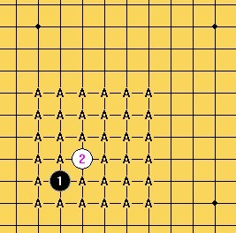
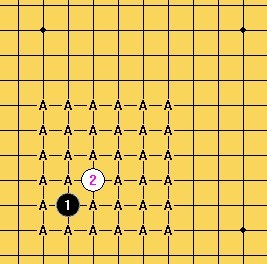

宽容规则测试（茗弈小刀VS潇洒）1 ==茗弈小刀胜
#1 <font color="red">宽容规则测试（茗弈小刀VS潇洒）1 ==茗弈小刀胜</font> 作者：潇洒 发表时间：2012-4-24 10:50:14
这个规则是由我平时自己玩的规则中演变出来的，觉得有点意思，没有要改变现行职业比赛规则的意思，只是发出来大家交流下，有希望玩的也可以一起玩玩。
宽容规则介绍：
1. A下第一手和第二手。这两子必须在四角星位范围以内，且白2须紧贴黑1（直指或斜指）。
2. B下第三手，必须在四角星位范围以内，且应与黑1，白2任一子距离3格或3格以内。
3. A下第四手，无任何限制。
4. B有权作出两种选择：
4-1. 自己下第5手，无任何限制。
4-2. 交给A下第5手，同样无任何限制。
5. 无论是A还是B下第5手，对手方均有权选择执黑或执白。
6. 以下按标准禁手规则行棋。
以上规则相应解释：
1：


2：

 

大概说一下，这个规则包括了目前的rif，山口，也包括了边角，其实第4第5手是有相应限制的，因为双方都需要保证在第5手后平衡。
另：
1：棋盘可以用围棋19路盘；
2: 5手后亦可双方无禁手行棋。
［此帖子已被 潇洒 在 2012-4-24 10:50:58 编辑过］
［此帖子已被 逆刃 在 2013-5-18 13:02:05 编辑过］
#2 <font color="red">Re:宽容规则测试（茗弈小刀VS潇洒）1 ==茗弈小刀胜</font> 作者：茗弈小刀 发表时间：2012-4-24 17:40:42
［此帖子已被 逆刃 在 2013-5-18 13:01:07 编辑过］
#3 Re:宽容规则测试（茗弈小刀VS潇洒）1 作者：潇洒 发表时间：2012-4-24 18:02:14
#4 Re:宽容规则测试（茗弈小刀VS潇洒）1 作者：茗弈小刀 发表时间：2012-4-24 18:09:23
#5 Re:宽容规则测试（茗弈小刀VS潇洒）1 作者：潇洒 发表时间：2012-4-24 22:26:20
交换#6 Re:宽容规则测试（茗弈小刀VS潇洒）1 作者：潇洒 发表时间：2012-4-24 22:40:36
#7 Re:宽容规则测试（茗弈小刀VS潇洒）1 作者：茗弈小刀 发表时间：2012-4-26 19:11:26
 那这盘算偶赢了！
那这盘算偶赢了！
#8 Re:宽容规则测试（茗弈小刀VS潇洒）1 作者：潇洒 发表时间：2012-4-26 19:47:37
交换。。请下第5手。。
［此帖子已被 潇洒 在 2012-4-26 19:47:53 编辑过］
#9 Re:宽容规则测试（茗弈小刀VS潇洒）1 作者：茗弈小刀 发表时间：2012-4-27 8:39:58
#10 Re:宽容规则测试（茗弈小刀VS潇洒）1 作者：潇洒 发表时间：2012-4-27 18:01:29
交换下黑#11 Re:宽容规则测试（茗弈小刀VS潇洒）1 作者：茗弈小刀 发表时间：2012-4-27 19:23:48
#12 Re:宽容规则测试（茗弈小刀VS潇洒）1 作者：潇洒 发表时间：2012-4-27 21:48:49
#13 Re:宽容规则测试（茗弈小刀VS潇洒）1 作者：茗弈小刀 发表时间：2012-4-28 8:10:03
#14 Re:宽容规则测试（茗弈小刀VS潇洒）1 作者：潇洒 发表时间：2012-4-28 10:53:06
#15 Re:宽容规则测试（茗弈小刀VS潇洒）1 作者：茗弈小刀 发表时间：2012-4-28 12:32:25
#16 Re:宽容规则测试（茗弈小刀VS潇洒）1 作者：潇洒 发表时间：2012-4-28 16:06:20
#17 Re:宽容规则测试（茗弈小刀VS潇洒）1 作者：茗弈小刀 发表时间：2012-5-5 12:46:16
#18 Re:宽容规则测试（茗弈小刀VS潇洒）1 作者：潇洒 发表时间：2012-5-5 13:36:38
#19 Re:宽容规则测试（茗弈小刀VS潇洒）1 作者：茗弈小刀 发表时间：2012-5-5 16:21:24
#20 Re:宽容规则测试（茗弈小刀VS潇洒）1 作者：潇洒 发表时间：2012-5-5 16:58:27
#21 Re:宽容规则测试（茗弈小刀VS潇洒）1 作者：茗弈小刀 发表时间：2012-5-6 10:48:33
［ 逆刃 于 2012-5-6 10:51:41 时花20金币送鲜花一朵］
#22 Re:宽容规则测试（茗弈小刀VS潇洒）1 作者：潇洒 发表时间：2012-5-6 11:29:23
#23 Re:宽容规则测试（茗弈小刀VS潇洒）1 作者：逆刃 发表时间：2012-5-6 18:05:57
刀刀那个22很漂亮哦！
#24 Re:宽容规则测试（茗弈小刀VS潇洒）1 作者：茗弈小刀 发表时间：2012-5-7 9:24:04
#25 Re:宽容规则测试（茗弈小刀VS潇洒）1 作者：潇洒 发表时间：2012-5-7 9:39:21
#26 Re:宽容规则测试（茗弈小刀VS潇洒）1 作者：自来水 发表时间：2012-5-7 13:27:14
又上成弟弟的号鸟
［此帖子已被 自来水 在 2012-5-7 13:28:35 编辑过］
#27 Re:宽容规则测试（茗弈小刀VS潇洒）1 作者：茗弈小刀 发表时间：2012-5-7 13:58:12
#28 Re:宽容规则测试（茗弈小刀VS潇洒）1 作者：潇洒 发表时间：2012-5-7 14:12:39
#29 Re:宽容规则测试（茗弈小刀VS潇洒）1 作者：茗弈小刀 发表时间：2012-5-7 14:15:36
#30 Re:宽容规则测试（茗弈小刀VS潇洒）1 作者：潇洒 发表时间：2012-5-7 14:49:44
#31 Re:宽容规则测试（茗弈小刀VS潇洒）1 作者：茗弈小刀 发表时间：2012-5-7 15:55:26

［ 逆刃 于 2012-5-7 17:52:19 时花20金币送鲜花一朵］
#32 Re:宽容规则测试（茗弈小刀VS潇洒）1 作者：逆刃 发表时间：2012-5-7 17:51:56
M8,M6抓禁？［此帖子已被 逆刃 在 2012-5-7 17:57:07 编辑过］
#33 Re:宽容规则测试（茗弈小刀VS潇洒）1 作者：潇洒 发表时间：2012-5-7 17:57:46
额。。小刀MM。。29可以悔一手吗。。
［此帖子已被 潇洒 在 2012-5-7 18:07:23 编辑过］